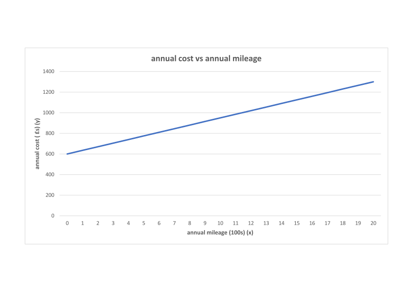
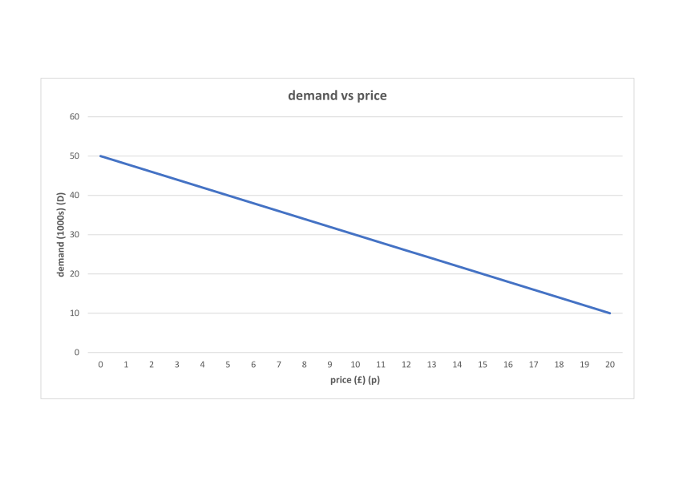
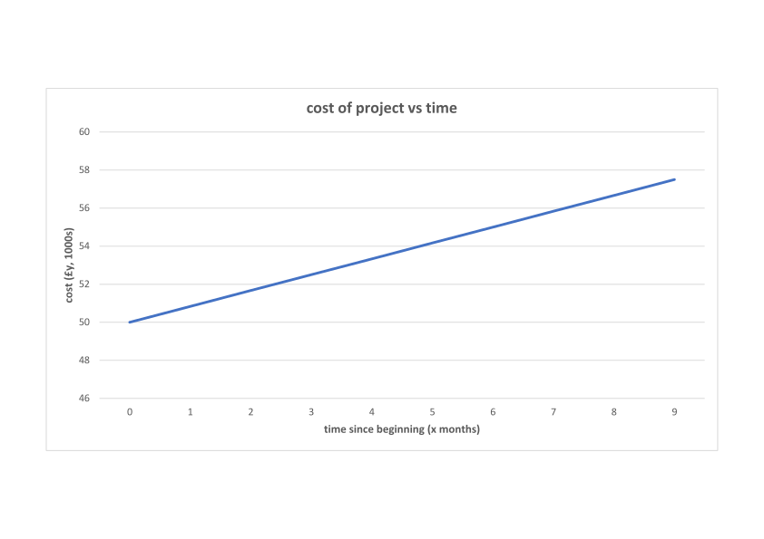
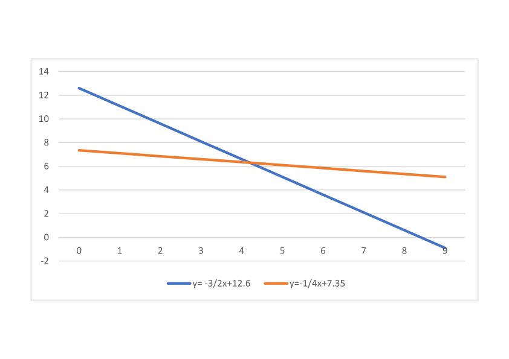

Equations and Graphs
Introduction
Suppose I wish to use mathematics to describe the annual cost of maintaining and driving a car. There are two components of cost, namely fixed costs, tax, insurance and servicing, and running costs, principally petrol and possibly repairs. These running costs depend on the mileage I do in the year. Suppose that the fixed costs are \(\pounds 600\) per annum and the running costs are \(\pounds 35\) per hundred miles. It is an easy task to construct a mathematical model relating annual costs to annual mileage.
First of all, let \(\pounds y\) be the annual cost of maintaining and running the car, and let \(x\) be the number of miles (in units of one hundred) that are done per year. We then have
\[ \mbox{Cost} = 35 \times \mbox{no. hundred miles driven} + \mbox{fixed costs}. \]Symbolically this becomes
\[ y = 35x + 600. \]This latter expression is an equation. It expresses a relationship between, in this case, two variables. If we know the value of one variable, then we can find the value of the second one. For example, if \(x = 90\), then \(y = 35 \times 90 + 600 = 3750\). In the context of our model we can say that it costs \(\pounds 3750\) to maintain and run the car if I drive 9000 miles.
If \(y = 5000\), then \(5000 = 35x + 600\), so \(35x = 5000 - 600 = 4400\) leading to \(x = 125.71\) (2 d.p.). In other words, \(\pounds 5000\) pays for about 12570 miles of motoring in a year.

We can easily draw a graph of \(y = 35x + 600\) using technology such as Microsoft Excel, Desmos, or Geogebra. This is shown above. We note that it is a straight line and the equation is called a linear equation. The line has a gradient of 35. That is, for every unit increase in \(x\) there is an increase of 35 in \(y\). The line has an intercept of 600. That is, it crosses the \(y\) axis at 600 (when \(x = 0\)).
Consider another example. Market research predicts the demand \(D\) (in units of a thousand) of an article varies with the price \(\pounds p\) according to the law
\[ D = 50 - 2p. \]Plotting \(D\) as a function of \(p\) gives:

Note that here as price rises, demand falls. The gradient, \(-2\), is negative and the intercept is \(50\). If \(D = 0\), then \(0 = 50 - 2p\) leading to \(p = \frac{50}{2} = 25\). In words, if the price reaches \(\pounds 25\), then there is no demand for the product.
Equation of a Straight Line
Both examples above give the equation of a straight line in the form \(y = mx + c\). (Note of course that the variables in the second are named \(p\) and \(D\) but that doesn’t matter.) The parameter \(m\) measures the inclination or slope of the line and is called the gradient. It measures the rate at which \(y\) changes with \(x\). In the first example \(m = 35\). It is the amount \(y\) increases by for a unit change in \(x\). In the second example \(m = -2\), so \(D\) is falling at a rate of \(2\) units for every unit increase in \(p\). Formally,
\[ \mbox{gradient} = m = \frac{\mbox{increase in } y}{\mbox{increase in } x}. \]The parameter \(c\) is called the intercept of the line. It is the value of \(y\) when \(x = 0\). Graphically, it is where the line crosses the vertical axis.
Example
The cost of a software project is initially estimated as \(\pounds 50,000\). Work begins on the project but after 6 months the cost is now estimated as \(\pounds 55,000\). The project is estimated to last for 22 months. Assuming that costs increase at the same rate, what will the cost be after 22 months?

Suppose the cost \(x\) months after the start of the project is \(\pounds y\) thousand pounds. Assume a linear relationship of the form \(y = mx + c\).
The gradient \(m = \frac{55 - 50}{6-0} = \frac{5}{6}\).
The intercept \(c = 50\).
So the linear law is \(y = \frac{5}{6}x + 50\).
When \(x = 22\), \(y = \frac{5}{6}x + 50 = \frac{5}{6} \times 22 + 50 = 68.33\).
So we conclude that the cost will be \(\pounds 68,000\) after 22 months.
Simultaneous Equations
In an unguarded moment I offer to buy a round of drinks. Three glasses of beer and two whiskies costs me \(\pounds 25.20\). Later in the evening someone else buys a round. This comprises one glass of beer and four whiskies and costs \(\pounds 29.40\). What is the individual cost of whisky and beer?
To solve this mathematically we introduce two variables. Let a glass of beer cost \(x\) pounds and let a glass of whisky cost \(y\) pounds. The first round costs \(3x + 2y\) and the second costs \(x + 4y\). Thus we have equations
There are several ways of solving these equations. We will use the method of elimination. (There are often many ways to do this, so you may have your own preferred way already.)
Multiply eqn. 1 by 2 to ensure that the \(y\) coefficient is \(4\), as in eqn. 2:
\[ 6x + 4y = 50.40. (\mbox{eqn. 3}) \]Subtract eqn. 2 from eqn. 3:
\[ (6x + 4y) - (x + 4y) = 50.40 - 29.40 = 21.00. \]Simplifying the left-hand side, we get
\[ 5x = 21.00, \]so \(x = \frac{21}{5} = 4.20\). To get the value of \(y\), we substitute this back into eqn. 1:
\[ 3 \times 4.2 + 2y = 25.20. \]Rearranging for \(y\) gives us \(2y = 12.6\), meaning that \(y = 6.30\). Checking this in eqn. 2:
\[ 4.20 + 4 \times 6.30 = 29.40. \]So we can conclude that it costs \(\pounds 4.20\) for a glass of beer and \(\pounds 6.30\) for a glass of whisky.

Alternatively, we can draw a graph of the two lines, first writing them as:
Geometrically the solution of the equations is the intersection of the lines.